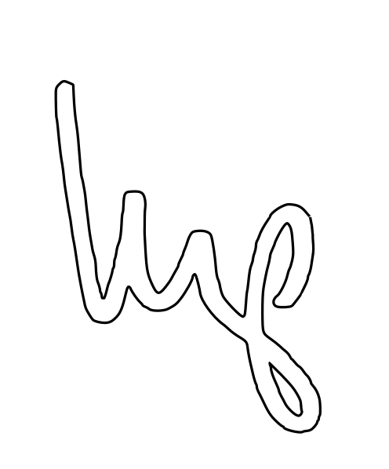
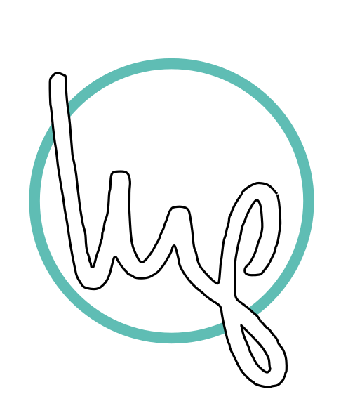

The signature marks
Kevin's short-form signature, written in Sharpie on a 3×5 index card in 2013 and scanned. Eight
SVGs, vendored byte-identically from kwpledger/logos-and-wordmarks. Naming runs
broad to narrow: logo_{long|short}[_ring][_inv].svg.
Never redraw, vectorize, retrace, auto-trace, "clean up," or regenerate the glyph.
The mark's authority comes from being an actual signature. A regenerated version is a drawing
of a signature — a different and much weaker thing, and the difference is visible to
people who cannot say why.
The short mark, and the ring
The _inv suffix marks the register, not the ring — the two
axes are independent. The signature deliberately overflows the circle and the ring center sits
slightly up and right of the ink center. That is what makes the overflow read as intentional.
Do not recenter it.
logo_short.svg

logo_short_inv.svg
…_ring_inv_teal.svg
The glyph is always black, or white with a black outline. Only the ring color varies.
Do not tint the initials to an accent, a channel hue, or anything else. And never ship a
_ring file at the #0026FF it arrives with — that is chroma 0.300,
3.3× this system's 0.091 ceiling, the loudest value anywhere near it. It is an
upstream placeholder meant to be swapped per channel, not a default.
Size by height; leave width to the file (width: auto). The long and
short marks have different aspects, so a series that pins width breaks the moment it switches
which mark it uses.
Two things that look like mistakes and are not
A small isolated stroke below the g and a 4×7px speck beside it —
artifacts of the pen lifting in 2013, and deliberate keeps. Each picks up its own outline in
the inverted variants; that is correct. Same for the ~2° of ring showing through the
p-descender gap in the circled black-ink files. Never clean any of it up.
logos/PROVENANCE.md is the authority — checksums, geometry, and the
superseded raster set. The eight SVGs are vendored, not authored here; artwork changes happen
upstream and get re-vendored. The only legal local file is a ring-color recolor.